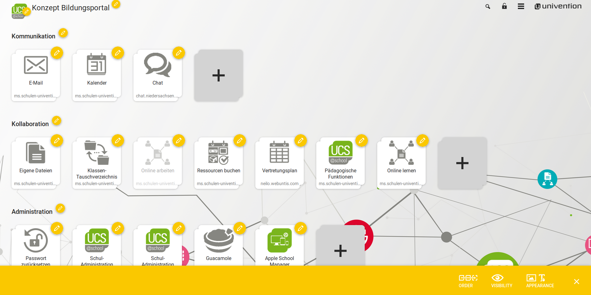

Sehr geehrter Besucher,
sie wurden auf diese Seite weitergeleitet, da hinter der Kachel die Sie im Demoportal angeklickt
haben noch keine Anwendung hinterlegt wurde. Das Konzept des Portals von UCS@school sieht vor,
dass Sie sehr einfach weitere Links auf Anwendungen oder Dienste integrieren können.
Diese Anwendungen und Dienste müssen nicht zwangsläufig auf einem UCS-Server installiert sein
aber können es selbstverständlich.
Sollte die Kachel, auf die Sie geklickt haben eigentlich schon auf einen bestimmten Service weiterleiten, sprechen Sie gerne den Betreiber dieser UCS@school-Umgebung darauf an. Dank der einfachen Konfiguration des Portals sollte dieser Fehler schnell behoben werden.
Während der Installation von UCS@school wurde das zuvor angezeigte Portal zu Testzwecken auf Ihrem UCS Server eingerichtet und aktiviert. Dort wurde eine mögliche Konfiguration eines Schulportals mit unterschiedlichen Ansichten für Lehrer, Schüler und Administratoren hinterlegt.
Um die verschiedenen Ansichten auszuprobieren, melden Sie sich einfach als demo_student, demo_teacher oder demo_admin an Ihrer UMC an. Das Passwort für die Testnutzer befinden sich in der UCR Variable ucsschool/join/demo_password.
Für ein produktives Schulportal können die Kacheln auf zuvor bereitgestellte Services, wie Vertretungspläne, Kalender oder Eigene Dateien, weiterleiten. Die Konfiguration des Portals können Sie direkt, wie hier zu sehen, auf der Seite selbst oder in den Portaleinstellungen des UMC Moduls Domäne durchführen.
Das Univention App Center bietet viele vorkonfigurierte Services und Applikationen zur einfachen Installation auf Ihrem UCS@school Server an, die den Mitarbeitern und Schülern Ihrer Schule über das Portal leicht und übersichtlich zur Verfügung gestellt werden können.
Weitere Informationen zur Einrichtung eines Portals auf Ihrem UCS@school Server können sie der offiziellen Dokumentation entnehmen.